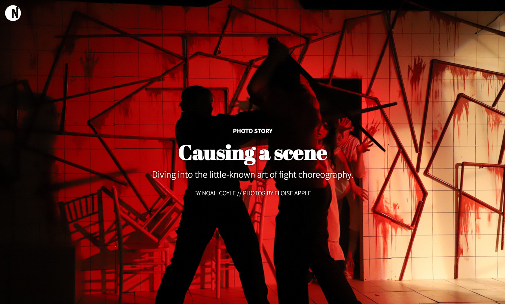
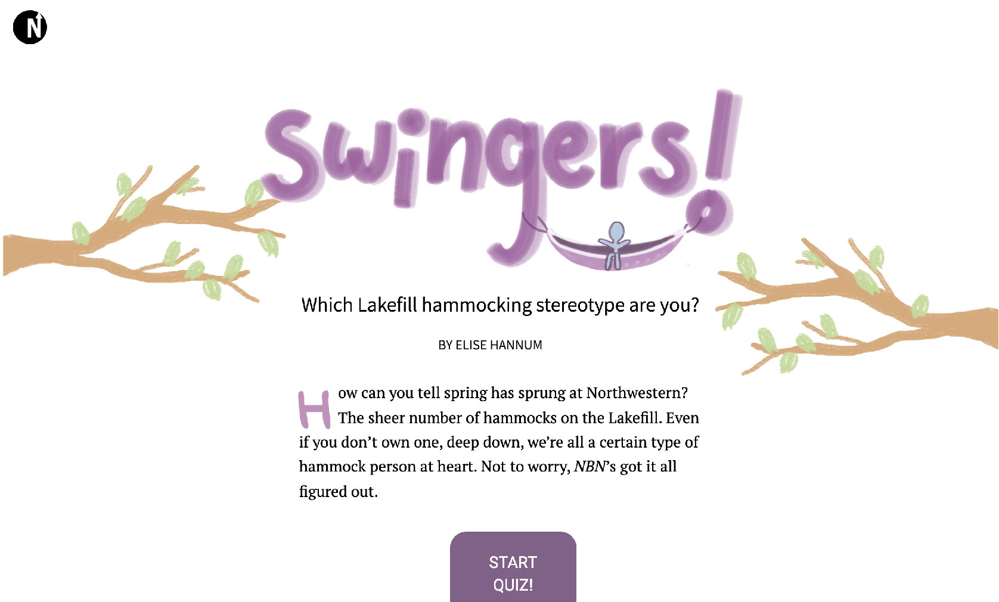
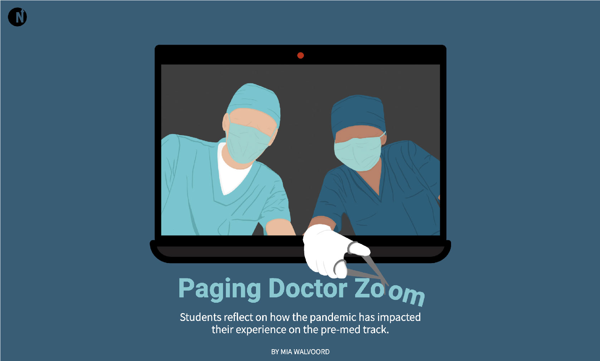

timeline: Spring 2021, Fall 2021, Spring 2022, Fall 2022
role: mag-to-web editor
publication: North by Northwestern
skills: web development, web design, HTML/CSS/JS, leadership
North by Northwestern’s mag-to-web team is in charge of transitioning the print magazine into a digestible, mobile friendly digital edition.
The goal: to make our print stories accessible online and push the limits of digital journalism.
I've created the style guide for stories, built the homepage and coded pages of my own using HTML, CSS and JS. More recently, I built various story templates that were available for designers to use if they wished, which added some consistency to the digital magazine.
Spring 2021 Digital Magazine Homepage
For this homepage, I wanted to emulate the same style I used for the Spring 2021 print magazine's table of contents: a black and white theme with photos tinted to reflect the color of the section each one belongs to. I used GSAP's ScrollTrigger to create the intro, which slides out of frame to reveal the digital magazine's stories.
Causing a scene
This article was featured as the Fall 2022 magazine's photo story, and I was excited to find the best way to present the story digitally without just dropping all the photos next to the text. I used a parallax effect to layer the story text over the photos, matching each image to the paragraph that refers to it.
Swingers!
This fun quiz tells you which type of hammocker you are at Northwestern's Lakefill. It was in flowchart form in our print edition, so I used JavaScript to transform it into an online interactive quiz.
Paging Doctor Zoom
As a result of the prolonged period of Zoom classes during the pandemic, pre-med students expressed concern about the quality of their learning — this story outlines their experiences. I ran with the digitized medical imagery the designer used to give the pull quotes a typing effect and to animate the doctor's tool in the opening image.